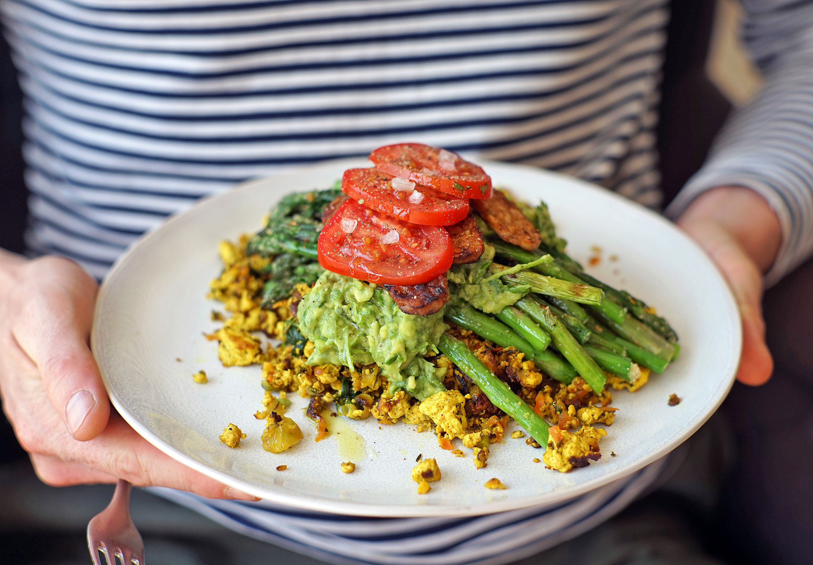
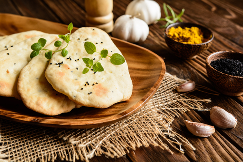
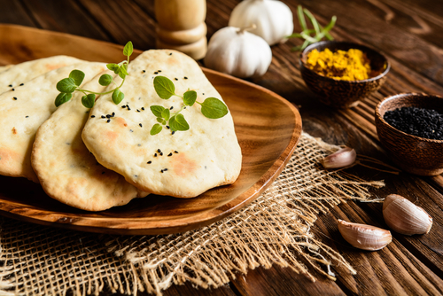
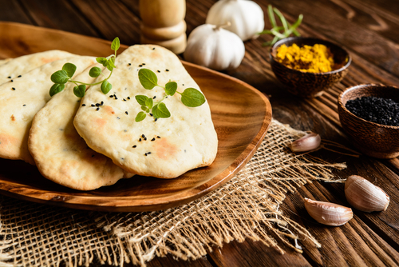

VEGAN RECEPTY
Pár tipů na námi osvědčené recepty!
Facebook:
E-mail:


Turecký chléb lavaš
INGREDIENCE
400g chlebové mouky
2 lžíce oleje
hrnek vody
sůl
POSTUP
Troubu předehřejeme na 250 °C.
Mezitím si zpracujeme ingredience
do těsta, které se nelepí. Následně
vyválíme tenké placky. Ty naskládáme
na plech, potřeme vodou a zasypeme
například mákem. Pečeme přibližně
3 minuty, dokud se placka nenafoukne.

 
